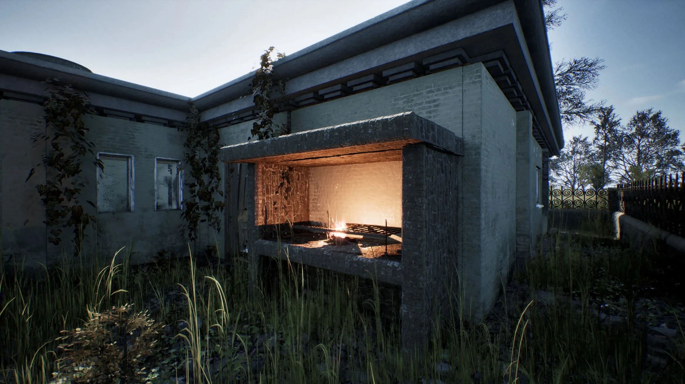

THE PATH INTO THE ABBYS


The Path Into The Abyss es un juego de supervivencia centrado en una Buenos Aires postapocalíptica, y basado en el universo de la película "Me encontrarás en lo profundo del abismo". Desarrollado por Matías Rispau.